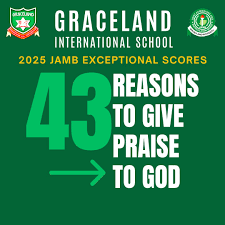
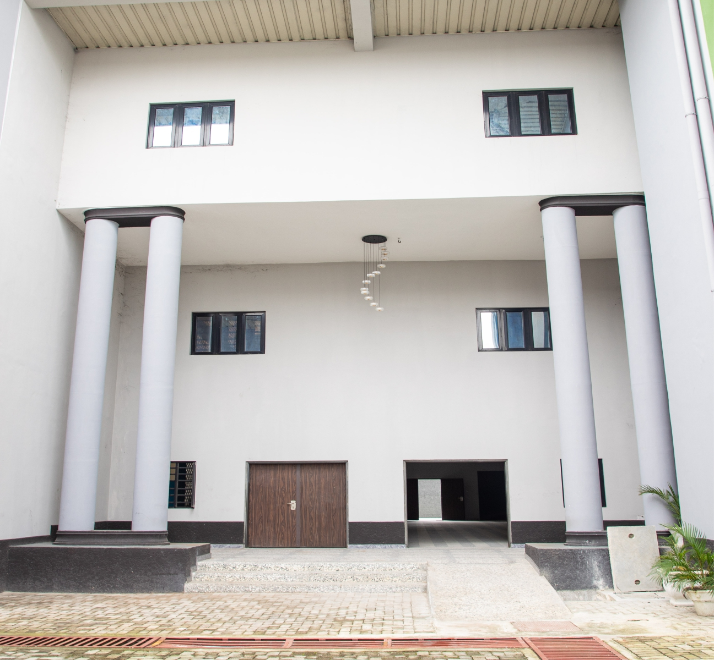

Admissions

Click here to see our logoAbout Our School

Graceland International School is a private co-educational institution. It is located at 25/27 Liberation Stadium Road, Elekahia, Port Harcourt. It was established in 2001 in keeping with the vision God gave to Mr & Mrs Essenlin in 1999. The school officially opened in September, 15, 2003 and operates both day and boarding systems. In 2011/2012 session the school changed to full boarding system.